To configure any network interface, you must be running commands as root. Don't do these configs when connected to remote systems(like with ssh) as interfaces will go up/down, ip will change etc which will kick you out of the system.
To enable or disable interfaces, we can use following commands :
ifconfig interface up/down
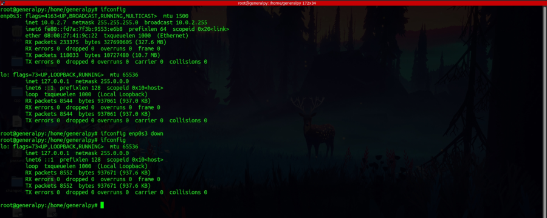
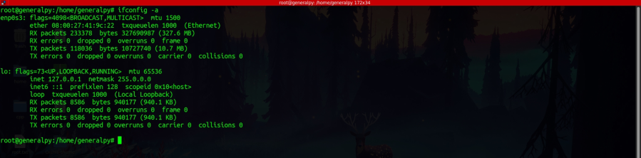
Here we can see that enp0s3 is down
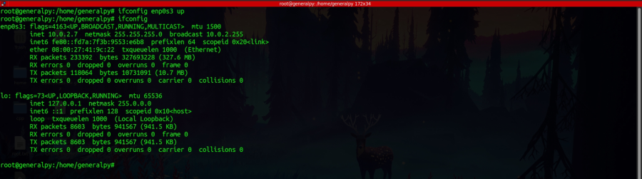
ip link set interface up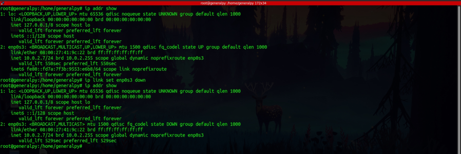
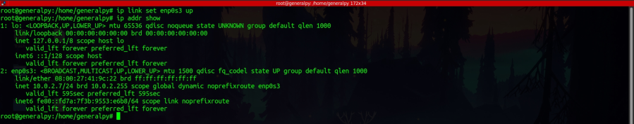
These settings are temporary as they are lost after reboot. To make them you have to edit specific config files. For example in Ubuntu we have to edit netplan file.
To set ip of an interface we can use following methods :
ifconfig interface ip(in cidr) [optional:up]
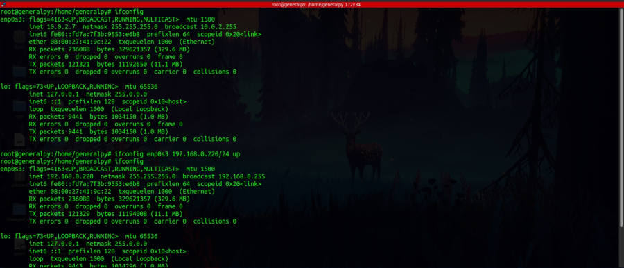
When changing ip from ip command, we first have to delete previous values. So changing ip using ip is 3 steps process.
ip addr del previous_ip(with cidr) dev interface
ip addr add new_ip(with cidr) dev interface
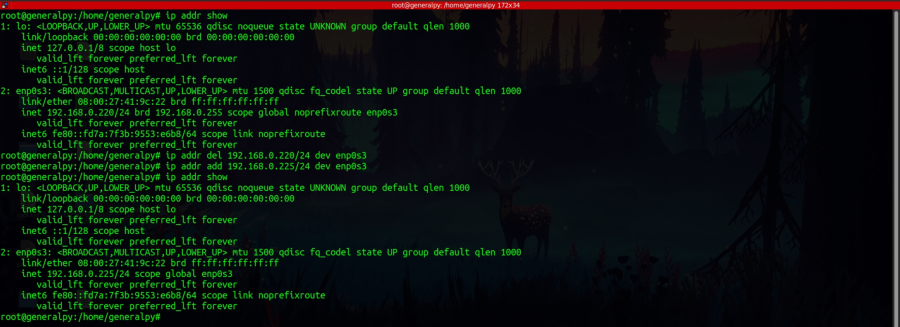
To change default gateway of the interface we can use the following methods :
We first have to delete existing gateway.
route del default gw gateway_ip
route add default gw new_gateway_ip
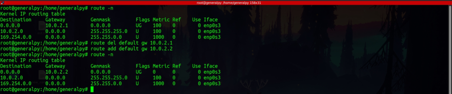
Same goes for the ip command.
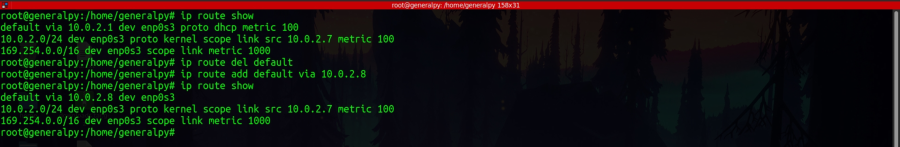
We can change the mac address of the interface by follwing methods :
When using ifconfig command we have to first disable the interface.
ifconfig interface down
ifconfig interface hw ether new_mac
ifconfig interface up
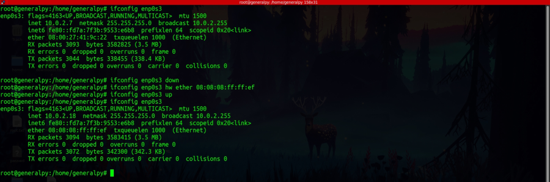
When ip command we dont have to take down our interface.
ip link set dev interface address new_mac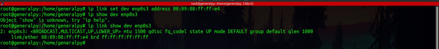